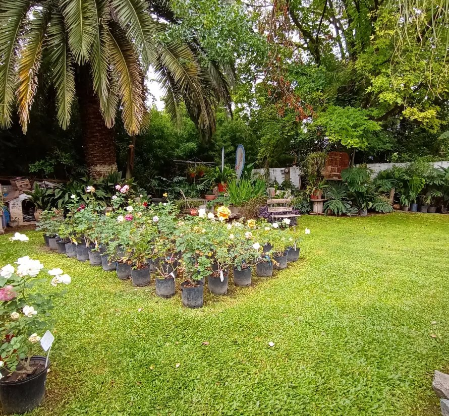
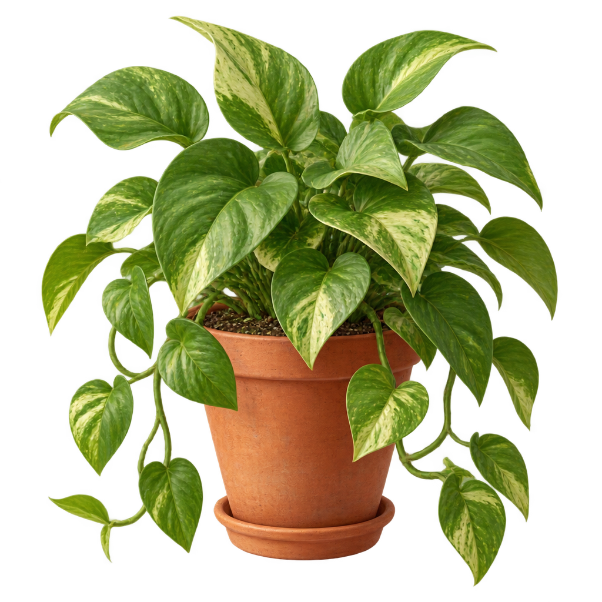

Tu vivero de siempre, con más de 50 años cuidando el barrio.
Plantas, tierra, macetas y todo lo que necesitás para tu jardín o tu balcón — atendido por la misma familia desde hace más de 50 años, en Bv. Juan Domingo Perón 1232.

Vivero Vancho — Moreno, Buenos Aires
// nuestros rubros
Todo lo que necesita tu espacio verde
La variedad de un vivero grande, con la atención de un negocio de barrio.

Plantas
El corazón de Vivero Vancho: variedad de plantas de interior y exterior para cada rincón de tu casa.
// nuestra historia
Más de 50 años en el mismo barrio
Vivero Vancho acompaña a las familias de Moreno desde hace más de 50 años, ayudando a elegir la planta justa para cada espacio y resolviendo todo lo que hace falta para el jardín: desde la tierra hasta la maceta.
Somos un vivero de barrio — atendido por la misma familia, con el mismo cuidado de siempre.
Seguinos en InstagramReseñas
Todavía estamos juntando las reseñas de nuestros clientes para mostrar acá. Así se van a ver cuando las tengamos:
"Encontré justo la planta que buscaba y me asesoraron muy bien para cuidarla."
— Reseña de ejemplo
"Un vivero de toda la vida en el barrio, siempre tienen lo que necesito."
— Reseña de ejemplo
// hablemos
Contacto
Estamos actualizando nuestros medios de contacto — muy pronto vas a poder escribirnos por WhatsApp y mail. Mientras tanto, escribinos por Instagram o pasá por el local en Bv. Juan Domingo Perón 1232, Moreno.